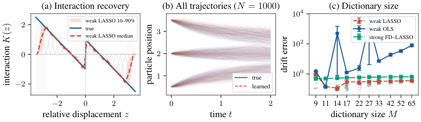

The main coefficient-recovery theorem (Theorem 1) is formalized in Lean 4, with the proof published in a public GitHub repository.
Abstract
We propose mesh-free weak-form regression for learning interaction kernels from noisy particle trajectories. Our method uses smooth test functions to avoid differentiating noisy data and empirical particle averages to avoid density reconstruction and spatial grids. We then fit sparse combinations of candidate functions, evaluating interaction terms on sampled particle pairs to avoid all-pair quadratic cost. By transferring identifiability from the mean-field limit, we prove high-probability coefficient error bounds that separate finite-particle, time-discretization, observation-noise, and pair-sampling errors, without grid-resolution or density-estimation terms. We evaluate one-dimensional (1D) Newtonian-repulsion, 2D predator-prey, and 10D distance-localized experiments. The numerical results show trends consistent with the theoretical coefficient-error bounds. Comparisons of weak and forward-difference formulations with LASSO, Ridge, and OLS show that weak LASSO gives the smallest coefficient and drift errors in the three nominal experiments.
Problem
The task is to learn pairwise interaction kernels in stochastic interacting particle systems from noisy, discrete particle trajectories. The method should avoid differentiating noisy data, avoid density reconstruction on spatial grids, and avoid the quadratic cost of evaluating all particle pairs.
Approach
Weak-form regression uses smooth spatial and temporal test functions together with empirical particle averages. Sparse dictionary coefficients are fitted by LASSO, with interaction features evaluated on sampled particle pairs. High-probability coefficient error bounds are proved by transferring identifiability from the mean-field McKean–Vlasov limit. The main recovery theorem is formalized in Lean 4.
Results
The bounds separate finite-particle, time-discretization, observation-noise and pair-sampling errors. Experiments on 1D Newtonian repulsion, 2D predator–prey and 10D distance-localized systems show error trends consistent with the bounds. Weak LASSO gives the smallest coefficient and drift errors among the weak and forward-difference OLS, Ridge and LASSO variants compared.

Figure 1: Results with the generic piecewise-linear dictionary. (a) True interaction and median weak LASSO fit at M=14 , with a 10–90% band over 100 repetitions; gray curves show median atom contributions and shading marks data-sparse tails. (b) True and weak LASSO trajectories generated from the same initial condition and Brownian increments. (c) Mean drift error for the three methods, with 95% c